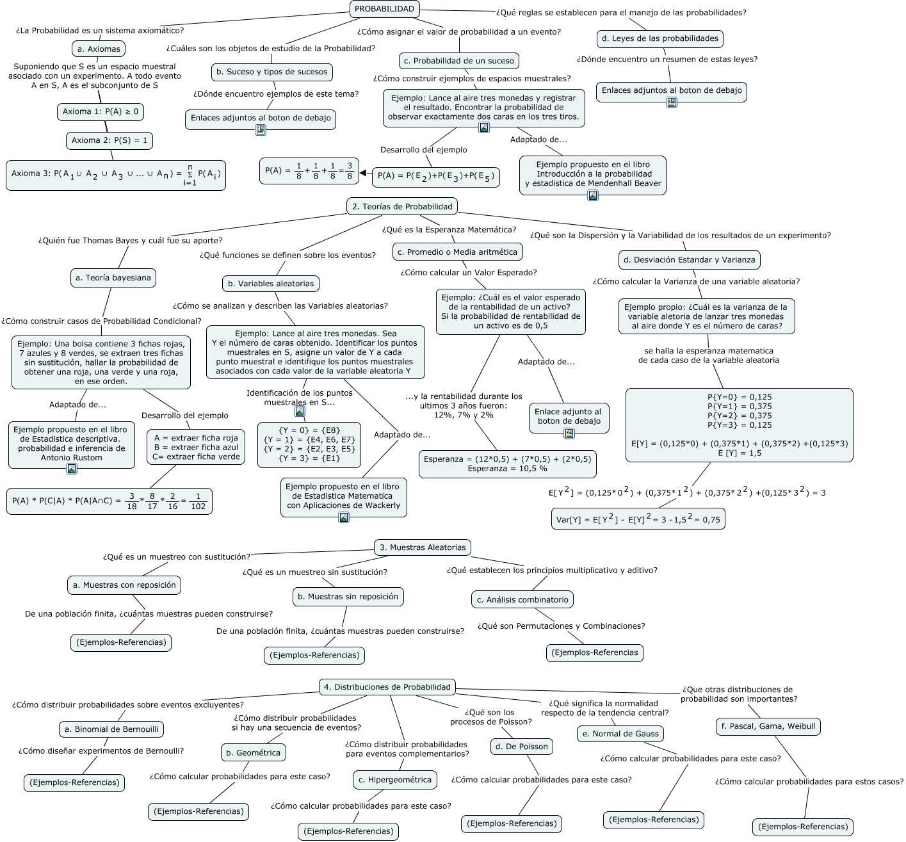

WARNING:
JavaScript is turned OFF. None of the links on this concept map will
work until it is reactivated.
If you need help turning JavaScript On, click here.
Este Cmap, tiene información relacionada con: Probabilidad-Mapa-Mayeutico-1, PROBABILIDAD ¿Cuáles son los objetos de estudio de la Probabilidad? b. Suceso y tipos de sucesos, Ejemplo propio: ¿Cuál es la varianza de la variable aletoria de lanzar tres monedas al aire donde Y es el número de caras? se halla la esperanza matematica de cada caso de la variable aleatoria P{Y=0} = 0,125 P{Y=1} = 0,375 P{Y=2} = 0,375 P{Y=3} = 0,125 E[Y] = (0,125*0) + (0,375*1) + (0,375*2) +(0,125*3) E [Y] = 1,5, 4. Distribuciones de Probabilidad ¿Qué son los procesos de Poisson? d. De Poisson, Ejemplo: Lance al aire tres monedas y registrar el resultado. Encontrar la probabilidad de observar exactamente dos caras en los tres tiros. Desarrollo del ejemplo <math xmlns="http://www.w3.org/1998/Math/MathML"> <mrow> <mtext> P(A) = P( </mtext> <mmultiscripts> <mtext> E </mtext> <mtext> 2 </mtext> <none/> </mmultiscripts> <mtext> )+P( </mtext> <mmultiscripts> <mtext> E </mtext> <mtext> 3 </mtext> <none/> </mmultiscripts> <mtext> )+P( </mtext> <mmultiscripts> <mtext> E </mtext> <mtext> 5 </mtext> <none/> </mmultiscripts> <mtext> ) </mtext> </mrow> </math>, 4. Distribuciones de Probabilidad ¿Cómo distribuir probabilidades sobre eventos excluyentes? a. Binomial de Bernouilli, c. Promedio o Media aritmética ¿Cómo calcular un Valor Esperado? Ejemplo: ¿Cuál es el valor esperado de la rentabilidad de un activo? Si la probabilidad de rentabilidad de un activo es de 0,5, d. Leyes de las probabilidades ¿Dónde encuentro un resumen de estas leyes? Enlaces adjuntos al boton de debajo, c. Hipergeométrica ¿Cómo calcular probabilidades para este caso? (Ejemplos-Referencias), 4. Distribuciones de Probabilidad ¿Cómo distribuir probabilidades si hay una secuencia de eventos? b. Geométrica, PROBABILIDAD ¿La Probabilidad es un sistema axiomático? a. Axiomas, Ejemplo: Una bolsa contiene 3 fichas rojas, 7 azules y 8 verdes, se extraen tres fichas sin sustitución, hallar la probabilidad de obtener una roja, una verde y una roja, en ese orden. Desarrollo del ejemplo A = extraer ficha roja B = extraer ficha azul C= extraer ficha verde, 3. Muestras Aleatorias ¿Qué es un muestreo con sustitución? a. Muestras con reposición, 2. Teorías de Probabilidad ¿Quién fue Thomas Bayes y cuál fue su aporte? a. Teoría bayesiana, 2. Teorías de Probabilidad ¿Qué son la Dispersión y la Variabilidad de los resultados de un experimento? d. Desviación Estandar y Varianza, b. Muestras sin reposición De una población finita, ¿cuántas muestras pueden construirse? (Ejemplos-Referencias), Ejemplo: Lance al aire tres monedas. Sea Y el número de caras obtenido. Identificar los puntos muestrales en S, asigne un valor de Y a cada punto muestral e identifique los puntos muestrales asociados con cada valor de la variable aleatoria Y Identificación de los puntos muestrales en S... <math xmlns="http://www.w3.org/1998/Math/MathML"> <mrow> <mtext> {Y = 0} = {E8} {Y = 1} = {E4, E6, E7} {Y = 2} = {E2, E3, E5} {Y = 3} = {E1} </mtext> </mrow> </math>, A = extraer ficha roja B = extraer ficha azul C= extraer ficha verde ???? <math xmlns="http://www.w3.org/1998/Math/MathML"> <mrow> <mtext> P(A) * P(C|A) * P(A|A∩C) = </mtext> <mfrac> <mtext> 3 </mtext> <mtext> 18 </mtext> </mfrac> <mtext> * </mtext> <mrow> <mfrac> <mtext> 8 </mtext> <mtext> 17 </mtext> </mfrac> <mtext> * </mtext> <mrow> <mfrac> <mtext> 2 </mtext> <mtext> 16 </mtext> </mfrac> <mtext> = </mtext> <mrow> <mtext> </mtext> <mfrac> <mtext> 1 </mtext> <mtext> 102 </mtext> </mfrac> </mrow> </mrow> </mrow> </mrow> </math>, 3. Muestras Aleatorias ¿Qué es un muestreo sin sustitución? b. Muestras sin reposición, b. Suceso y tipos de sucesos ¿Dónde encuentro ejemplos de este tema? Enlaces adjuntos al boton de debajo, <math xmlns="http://www.w3.org/1998/Math/MathML"> <mrow> <mtext> P(A) = P( </mtext> <mmultiscripts> <mtext> E </mtext> <mtext> 2 </mtext> <none/> </mmultiscripts> <mtext> )+P( </mtext> <mmultiscripts> <mtext> E </mtext> <mtext> 3 </mtext> <none/> </mmultiscripts> <mtext> )+P( </mtext> <mmultiscripts> <mtext> E </mtext> <mtext> 5 </mtext> <none/> </mmultiscripts> <mtext> ) </mtext> </mrow> </math> <math xmlns="http://www.w3.org/1998/Math/MathML"> <mrow> <mtext> P(A) = </mtext> <mfrac> <mtext> 1 </mtext> <mtext> 8 </mtext> </mfrac> <mtext> + </mtext> <mfrac> <mtext> 1 </mtext> <mtext> 8 </mtext> </mfrac> <mtext> + </mtext> <mfrac> <mtext> 1 </mtext> <mtext> 8 </mtext> </mfrac> <mtext> = </mtext> <mfrac> <mtext> 3 </mtext> <mtext> 8 </mtext> </mfrac> </mrow> </math>
